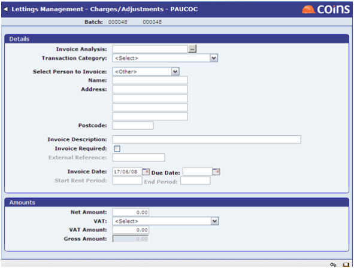

Manual Charges and Adjustments
Charges/Adjustments allows you to enter batches for manual charges and adjustments to the landlord and tenant accounts.

The main thing to note is the analysis field. This should be of the following format:
- T.<Tenancy>
For tenant transactions
- D.<Tenancy>
For deposit transaction
- L.<Property>
For general property transactions not associated with a tenancy
- L.<Property>.<Tenancy>
For property transaction associated with a specific tenancy.
Note that the charges/adjustments work like for landlord transactions and for tenant transactions. In the tenant ledger the rent and a charge (for example, admin fee) would both be shown as positive values and a refund would be negative.
In the landlord ledger, rent and refunds would be positive and a charge (for example, management fee/tax deduction) would be negative.